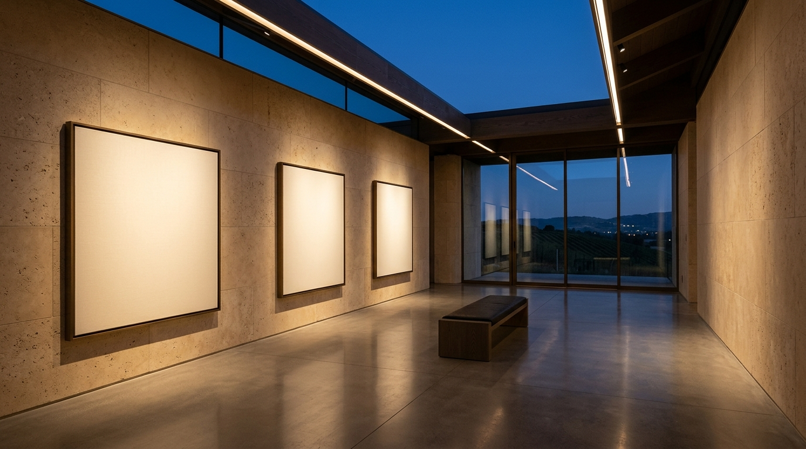
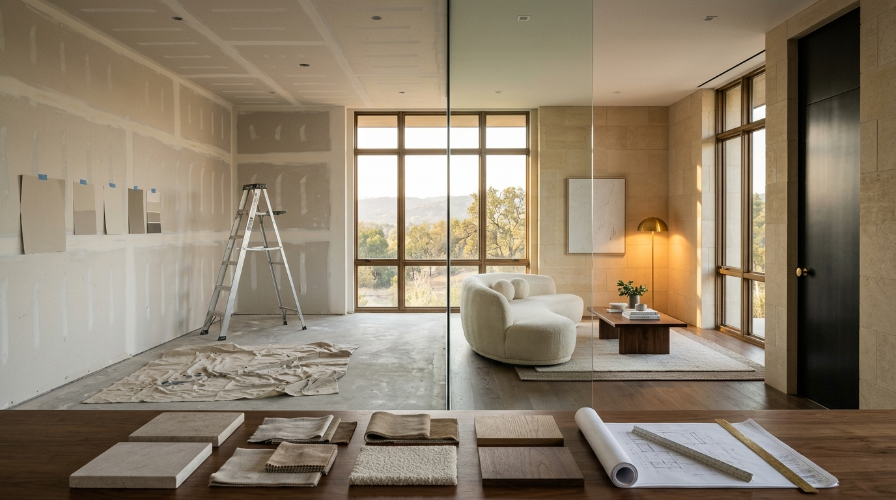

PACIFIC HEIGHTS
OFF-MARKET
$8,950,000
BROADWAY CORRIDOR, SAN FRANCISCO, CA 94115
6 BEDS · 6.5 BATHS · 6,800 SQ.FT · GOLDEN GATE VIEW
WORLD-CLASS LUXURY, TIMELESS ARCHITECTURE & PANORAMIC HARBOR VIEWS
San Francisco stands as one of the world's most recognizable architectural landscapes. From the historic mansions lining Billionaires' Row in Pacific Heights to the leafy tranquility of Presidio Heights and luxury penthouses overlooking the Bay, Steven Lenz Jr. and Compass provide discreet, data-sharp advisory for premier urban transactions.
Billionaires' Row, grand Beaux-Arts and Victorian mansions, Alta Plaza Park, and sweeping north-facing Golden Gate views.
Refined residential avenues bordering the historic Presidio national park, distinguished schools, and peaceful private gardens.
Chestnut and Union Street boutiques, vibrant waterfront dining, Palace of Fine Arts, and Golden Gate promenade strolling.
Iconic cable car lines, historic luxury cooperatives, hidden pedestrian stairways, and panoramic Bay Bridge perspectives.

